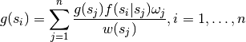
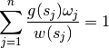
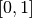
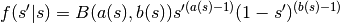
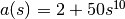
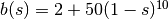
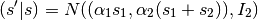

Welcome to PSC 585 ‘s documentation!¶
This is the code that I wrote for PSC 585: Dynamic and Computational Modeling at the University of Rochester in Spring 2011 and taught by Tasos Kalendrakis.
Generic Code¶
Code written for PSC 585: Dynamic and Computational Models, Spring 2011
- class psc585.TestKosaraju[source]¶
Test algorithms against known results
Use on command line as py.test dfs.py
Methods
- psc585.binary2int(x)[source]¶
Convert binary array to integer
Parameters : x : ndarray
Array with the binary representation of a number
Returns : y : int
Decimal integer
- psc585.cftp(P, T=1, u=None)[source]¶
Single draw with coupling from the past
Parameters : P : (n, n) ndarray
Transition matrix
T : int
Number of iterations
u : (t <= T, ) ndarray
Draws from a uniform distribution
Returns : X : int
State
T : int
Number of iterations until convergence
- psc585.cftp_sample(P, n=1)[source]¶
Sample with coupling from the past
Parameters : P : (N, N) ndarray
Transition matrix
n : int, optional
Number of draws from the distribution
Returns : X : (n, ) ndarray
Draws from the invariant distribution of P
Notes
Calls cftp n times to get n draws from the invariant distribution of P using the coupling from the past algorithm.
- psc585.dfs(P, order=None)[source]¶
Depth first search
Parameters : P : array, shape (n, n)
Stochastic transition matrix
order : array, shape (n, ), optional
Order in which to search the nodes.
Returns : F : array, shape (n, )
Time of first visit
L : array, shape (n, )
Time of last visit
G : array, shape (n, n)
Graph of minimum spanning tree. Entries have a value of 1 if there is an edge between i and j, and 0 if there is not.
- psc585.gjacobi(A, b, x, maxit=1000, tol=9.9999999999999994e-12, normalizer=None)[source]¶
Gauss-Jacobi iterative linear solver for sparse matrices
Parameters : A : sparse matrix, shape (n, n)
Left hand side of linear system.
b : array, array (n, )
Right hand side of linear system.
x : array, array (n, )
On entry, x holds the initial guess. On exit x holds the final solution.
tol : float
Requested error tolerance for convergence.
maxit : :
Maximum number of iterations.
Returns : info : int
Exit status. 0 if converged. -1 if it did not.
iter : int
Number of iterations
relres : float
total variance norm of the final solution.
Notes
Code based on gjacobi in the compecon Matlab toolbox.
- psc585.gseidel(A, b, x, maxit=1000, tol=9.9999999999999998e-13, relax=1.0, normalizer=None)[source]¶
Gauss-Jacobi iterative linear solver for sparse matrices
Parameters : A : sparse matrix, shape (n, n)
Left hand side of linear system.
b : array, array (n, )
Right hand side of linear system.
x : array, array (n, )
On entry, x holds the initial guess. On exit x holds the final solution.
tol : float, optional
Requested error tolerance for convergence.
maxit : int, optional
Maximum number of iterations.
relax : float, optional
Relaxation parameter. Default is 1 in Gauss-Seidel. Set to values of less than or greater to 1 for under or over relaxation.
Returns : info : int
Exit status. 0 if converged. -1 if it did not.
iter : int
Number of iterations
relres : float
total variance norm of the final solution.
See also
Notes
Code based on gseidel in the compecon Matlab toolbox.
- psc585.ilu0_factor(a)[source]¶
Incomplete LU Factorization
Parameters : a: array, shape (M, M) :
Matrix to decompose
Returns : lu : array, shape(M, M)
Matrix containing U in its upper triangle and L in its lower triangle.
Notes
Uses the ILU(0) algorithm. Algorithm 2.3 in PSC 585 class notes.n
There exist other preconditioners in scipy.linalg and scipy.linalg.sparse but I could not find which one corresponded to ilu(0).
- psc585.int2binary(x, width=32)[source]¶
Convert integer to binary array
Parameters : x : int
width : int
Width of binary representation.
Returns : y : (width, ) ndarray
Vector of boolean values for binary representation.
- psc585.invariant_integral(f, n, qw=<function newton_cotes at 0x379cc80>)[source]¶
Solve Integral equation by quadrature approximation
Parameters : f : function
State transition function
n : int
Number of quadrature nodes
qw : function, optional
Function to calculate the location and weights of the quadrature nodes
Returns : g : (n, ) ndarray
Solutions to integral equation
x : (n, ) ndarray
Quadrature nodes
w : (n, ) ndarray
Quadrature weights
Notes
Solves for g(s) where

with the system of linear equations

and

- psc585.kosaraju(P)[source]¶
Kosaraju’s Algorithm for Strongly Connected Components
Returns : list : list
Each element of the list is a component of the graph. Each component is a list of length two. The first element in the component is a list of the states in that component. The second element in the component is a boolean indicating whether the component is an ergodic set.
Notes
The typical Kosaraju algorithm is modified to return the ergodic sets and transient set of a Markov chain transition matrix.
- class psc585.lookahead(f, fsample, init, T)[source]¶
Look ahead estimator of Markov Chain invariant distribution
Parameters : f : function
Transition function
fsample: function :
Function to draw directly from transition function given the current state.
init : (m, ) ndarray
Initial values for each chain. The number of chains to run is determined by the dimensions of this array.
T : int
Number of iterations to run each chain.
Methods
- psc585.multinomial(u, pvals)[source]¶
Draw from multinomial
Parameters : u : float
Number in 0, 1 interval
pvals : (k, ) ndarray
Probability mass function of a discrete distribution
Returns : y : int
- psc585.newton_cotes(n, a=0.0, b=1.0)[source]¶
1-dimensional Newton-Cotes Quadrature Midpoint Rule
Parameters : n : int
Number of quadrature points.
a : float
Lower bound of interval to integrate over.
b : float
Upper bound of interval to integrate over.
Returns : x : (n, ) ndarray
Nodes
w : (n, ) ndarray
Weights for each node
Quadrature points and weights derived using Newton-Cotes with :
the midpoint rule formula. See Judd, p. 252-253. :
- psc585.newton_cotes_d(n, a=None, b=None)[source]¶
d-dimensional Newton-Cotes Quadrature
Parameters : n: (d, ) ndarray :
Number of quadrature nodes in each dimension
a: (d, ) ndarray :
Lower bound in each dimension
b: (d, ) ndarray :
Upper bound in each dimension
Returns : x : (n.prod(), d) ndarray
Quadrature nodes
w : (n.prod(), ) ndarray
Quadrature weights
Notes
Generates quadrature nodes and weights in d-dimensions using the Newton-Cotes midpoint rule.
- psc585.power_iteration(P, x=None, tol=1.0000000000000001e-15, T=200)[source]¶
Iterative linear solver
- psc585.qnwcheb1(n, a, b)[source]¶
Univariate Gauss-Chebyshev quadrature nodes and weights
Parameters : n : int
number of nodes
a : float
left endpoint
b : float
right endpoint
Returns : x : array, shape (n,)
nodes
x : array, shape (n,)
weights
Notes
Port of the qnwcheb1 function in the compecon matlab toolbox.
- psc585.qnwnorm(n, mu=None, var=None)[source]¶
Compute nodes and weights for multivariate normal distribution
Parameters : n : (d, ) ndarray
Array of the number of quadrature nodes for each dimension.
mu : (d, ) ndarray, optional
Distribution mean
var : (d, d) ndarray, optional
Distribution covariance matrix
Returns : x : (n.prod(), d) ndarray
Quadrature nodes.
x : (n.prod(), ) ndarray
Quadrature weights
Notes
Port of qnwnorm function in the compecon matlab toolbox.
- psc585.qnwnorm1(n)[source]¶
Gauss-Hermite normal quadrature nodes and weights in 1 dimension
Parameters : n : int
Number of quadrature nodes
Returns : x : (n, ) ndarray
Quadrature nodes
w : (n, ) ndarray
Quadrature weights
- psc585.sparse_power_iteration(P, x, tol=1.0000000000000001e-15, maxiter=200)[source]¶
Preconditioned power iteration for a sparse stochastic matrix
- psc585.spectral_gap(A)[source]¶
Spectral gap
The spectral gap is the difference between the two largest eigenvalues of matrix.
- psc585.to_discrete(f, n, qw=<function newton_cotes at 0x379cc80>)[source]¶
Discretize Continuous Markov Chain
Parameters : f: function :
Transition function.
n: array, shape (d, ) :
Number of discrete states.
qw: function :
Function to use to calculate discrete states.
Returns : P : array, (n.prod(), n.prod())
Discrete Markov chain transition matrix. Where p_ij in the matrix means p(s_j | s_i).
x : array, shape (n.prod(), d)
quadrature nodes
w : array, shape (n.prod(), )
quadrature weights
Problem Set 1¶
Problem Set 1: Markov Chains
- class psc585.ps1.Legislature(x, ufunc=<function quadratic_utility at 0x3fadde8>)[source]¶
Legislature in problem 3
Parameters : x : (m, d) ndarray
Ideal points of legislators
ufunc : function, optional
Function to calculate the utility of a policy relative to an ideal point
Notes
This class contains a set of legislators with d-dimensional ideal points, and a utility function. It includes methods to compare two policies given the legislators’ ideal points.
Methods
- transition(S)[source]¶
Return a transition matrix for a Markov Chain
Parameters : S : (n, d) ndarray
n points on a d-dimensional policy space
Returns : P : (n, n) ndarray
Transition matrix. There is an equal probability of transitioning to any point
Notes
Right now this is VERY slow because this function finds the majority preferred policies by checking every other policy and returning a dense matrix. There is probably a better way to implement this.
- class psc585.ps1.Provinces(D)[source]¶
Provinces in problem 4
Parameters : D : (k, k) ndarray
Matrix of distances between provinces
Attributes
D (k, k) ndarray Matrix of distances between provinces k int Number of provinces dmax int Maximum distance between provinces. maxstate int Maximum state. States are numbered 0 to  .
.P (2^k, 2^k) sparse array Transition matrix of the Markov chain of revolt probabilities for each province.
- psc585.ps1.p2a_f(sprime, s)[source]¶
Problem 2.a, function f
Parameters : sprime : float
State transitioning to. Between 0 and 1.
s : float
State transitioning from. Between 0 and 1.
Returns : p : float
Transition probability.
Notes
Continuous Markov chain on the unit interval ,

where  and 
- psc585.ps1.p2c_f(sprime, s)[source]¶
Problem 2.c, function f
Parameters : sprime : float.
State transitioning to
s : float
State transitioning from
Returns : p : float
Transition probability
Notes

where
 and
and  .
.